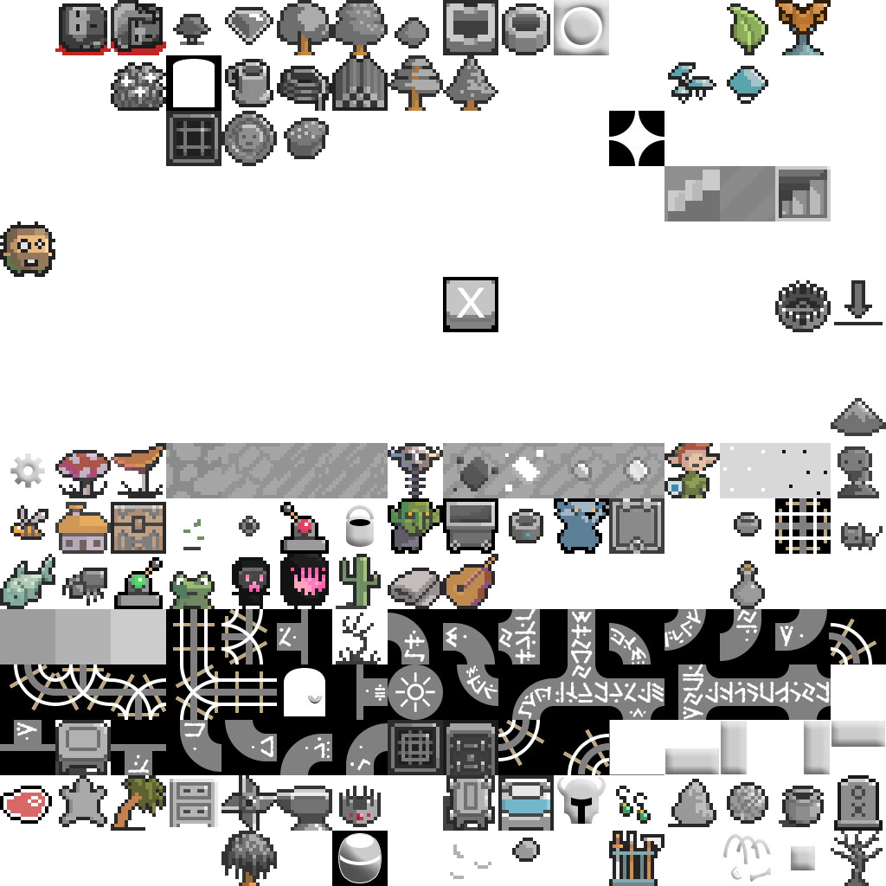

Color Scheme
[BLACK_R:0][BLACK_G:0][BLACK_B:0] [BLUE_R:44][BLUE_G:136][BLUE_B:222] [GREEN_R:32][GREEN_G:144][GREEN_B:32] [CYAN_R:0][CYAN_G:128][CYAN_B:128] [RED_R:176][RED_G:8][RED_B:8] [MAGENTA_R:176][MAGENTA_G:56][MAGENTA_B:160] [BROWN_R:120][BROWN_G:94][BROWN_B:48] [LGRAY_R:176][LGRAY_G:176][LGRAY_B:176] [DGRAY_R:120][DGRAY_G:120][DGRAY_B:120] [LBLUE_R:144][LBLUE_G:202][LBLUE_B:255] [LGREEN_R:66][LGREEN_G:232][LGREEN_B:40] [LCYAN_R:128][LCYAN_G:224][LCYAN_B:216] [LRED_R:255][LRED_G:0][LRED_B:0] [LMAGENTA_R:255][LMAGENTA_G:84][LMAGENTA_B:255] [YELLOW_R:255][YELLOW_G:236][YELLOW_B:48] [WHITE_R:255][WHITE_G:255][WHITE_B:255]
Background Color
Foreground Color
